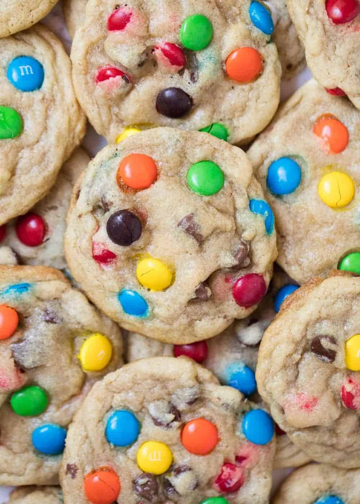

Odin Recipes: Recipes from an Amateur
Take me back; I'm too scared to cook!
M&M Cookies

(Image from I Heart Naptime, just like this recipe (but with modifications by yours truly))
Do you love chocolate chip cookies, but hate too much melty chocolate at once? No? Why does everyone say that's just me? I swear, it's not that weird. Anyway, this recipe solves that problem and is better anyway. Now, let's get cooking!
The Ingredients
If you can keep M&M's in the house long enough to bake these before everyone else eats them, everything else on this list should be a pantry staple. Yay, convenience!
- 1 cup unsalted butter, softened
- 1 cup light brown sugar, packed
- 3/4 cup granulated sugar
- 2 large eggs, at room temperature
- 1-ish tablespoon vanilla extract (measure with your heart)
- 1 teaspoon baking soda
- 1 teaspoon salt
- 3 cups all-purpose flour
- 1 1/2 cups M&M candies
- 1/2 cup dark chocolate chips
The Process
Listen to me: do not attempt to cream the butter and sugar together by hand like I did. Yes, you can do it. Yes, it's a decent arm workout (but only on one side). Just use the hand mixer and save yourself the lopsided biceps, okay?
- Preheat oven to 375 degrees Fahrenheit.
- In a large bowl, use hand mixer to beat together butter, brown sugar and granulated sugar until light and fluffy.
- Add eggs and vanilla and mix until just combined.
- Add in flour, baking soda, and salt and mix until just combined.
- Fold in M&M's and chocolate chips. It will look like too much chocolate; it is not and this is normal.
- Chill dough for approximately 30 minutes. This is important to keep dough from overspreading.
- Scoop cookie dough using a standard cookie scoop onto baking sheet lined with parchment paper.
- Bake cookies for about 9 minutes and remove from oven, then allow cookies to stand 5 minutes on baking sheet to finish baking on carryover.
- After 5 minutes on baking sheet, transfer cookies to wire rack to cool completely.
- Enjoy warm (if you like melty chocolate, which is weird, but fine, I guess) or at room temperature. Cookies will keep an an airtight container for about a week (if they last that long).
The Ratings
We made it, we ate it, and now we rank it.
- Base Rating: 9/10: Amazing. The vanilla really elevates these cookies and makes them one of a kind. Pro tip: Try not to eat four at once. It's easy, but the ensuing tummy ache isn't.
- Rating with Rice: 5/10: Again, that's a weird thing to eat with cookies, but I'm not judging. The goodness of the cookie holds the ranking aloft despite the rice.